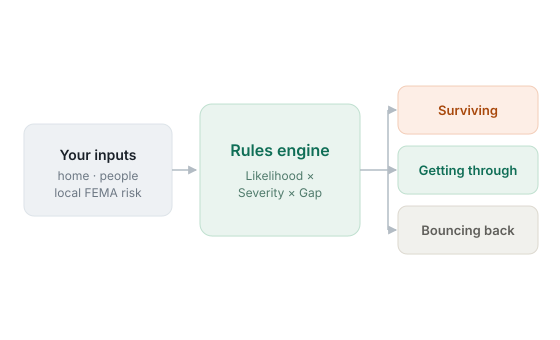
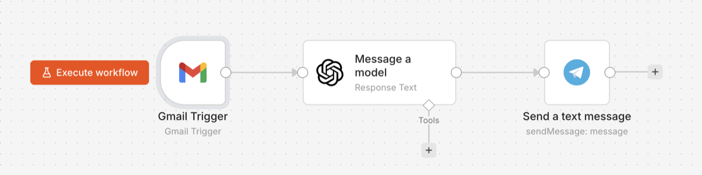

The work I'm drawn to is high-stakes and messy with information, where being wrong has a human cost.
Founded Caringly, a clinical care-transition platform active in daily hospital production for six-plus years. Founded Perci, a workforce-resilience platform built across software and hardware. Starting from zero meant owning all of it: product, sales and marketing, account management, hiring and building teams, working with patent counsel, and shipping every release. I trained as a physician and molecular biologist, and that discipline is what I bring to it.
The same problem, approached twice: the hospital handoff where most serious errors begin, and the workplace caught unready for disaster.
Workforce resilience for organizations that can't afford to go dark. A mobile readiness app, an award-winning hardware kit, and an enterprise Resilience Intelligence Dashboard. I led the 2025 pivot from consumer to B2B after market discovery and prioritized a roadmap, under real constraints, toward critical-infrastructure partners.
The handoff of patient-care responsibility between hospital providers is where coordination breaks and harm accumulates. I led the team that built and ran the platform, and drove the product itself, interviewing charge nurses, hospitalists, and intensivists across the country to get the workflow right. It has run in continuous clinical production at a safety-net hospital for six-plus years, and runs there today, used daily across the care team.
A community-radio concept for the “Africa Takes on COVID-19” track, keeping communities connected and informed when conventional channels fail. Built and pitched with a six-person international team.
Watch the pitch ↗Evidence-based mHealth messaging delivered at scale for payers and providers: screening, prenatal and well-child, vaccination and adherence, built to health-literacy standards.
Small things I design and build with AI, shipped end to end.

A 2-minute disaster-readiness check. A tunable rules engine turns your home, household, and local FEMA risk into a personalized, honest plan.
A browser game about single-pointed focus, built on the Arjuna legend. Strike where the eye will be, not where it is.

First AI agent: an n8n workflow that auto-summarizes my newsletter inbox (Gmail → GPT-5-nano → Telegram) and pings me the takeaways daily. No clicks required.
Designed and built with AI, then shipped. The site is itself a small proof of the workflow.
Two decades in reverse: founder, then digital-health product, then the medical-education and science foundation underneath it all.
A B2B workforce-resilience platform spanning a mobile app, an award-winning hardware kit, and an enterprise readiness dashboard. Led the 2025 pivot from consumer to B2B after market discovery and landed early partnerships in critical infrastructure.
Advised the Center on emerging-products strategy, evaluating and shaping new digital health product opportunities for the enterprise.
A clinical care-transition platform for the handoff of patient-care responsibility between hospital providers. Six-plus years in continuous production at MLK Jr. Community Hospital, integrated with Cerner over HL7, SOC 2 Type 1. Built the product practice from scratch with a team up to twelve.
Built messaging-based product solutions for payers and providers; drove product development of evidence-based mHealth messaging libraries delivered at scale and aligned to payer quality priorities; partnered with sales to turn capability into use cases and demos.
Owned messaging product features; authored PRDs, personas, and requirements; drove Agile/Scrum delivery, A/B testing, and the roadmap with an offshore engineering team.
Built the “Get Healthy” mobile-app prototype (UCLA Anderson / Johnson & Johnson).
Directed digital and traditional medical-education product across oncology, neurology / multiple sclerosis, and inflammation. Drove content product development and directed scientific-director teams for more than a decade, including digital physician-education strategy for a neurology therapeutic (WebMD / Medscape).
Managed development and launch of a bioinformatics database product (Cognia Molecular) and directed a team of curators: my first ground-up product.
I trained as a physician and molecular biologist. I practiced for a year as a junior resident in anesthesiology and pediatrics, then moved into molecular biology research and a decade of medical-education product: the discipline of getting complex clinical science exactly right, for audiences who'd catch you if you didn't. That's where I learned to run teams and ship work people relied on.
When healthcare moved to software, I moved with it: technical product management at mPulse and mobileStorm, then founding two companies. At Caringly I built a care-transition platform that has run in clinical production for six-plus years and still runs today. At Perci I'm building workforce resilience across software and hardware. Different fields, same pattern: learn it from the inside, then make something durable.
I don't practice medicine. What I carry from it is a way of working: precise, calm under pressure, accountable for outcomes where being wrong has consequences.